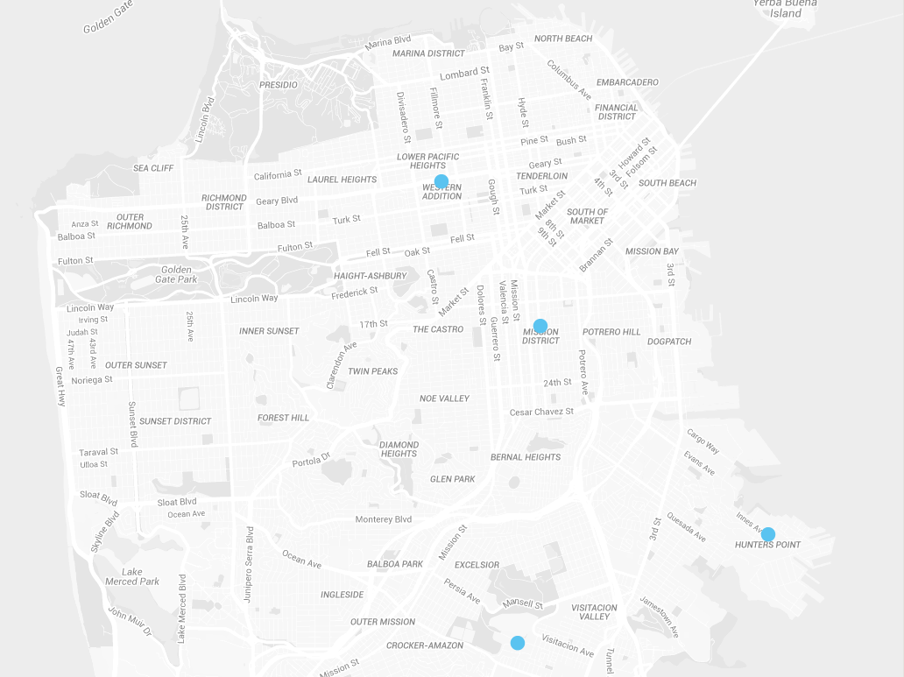
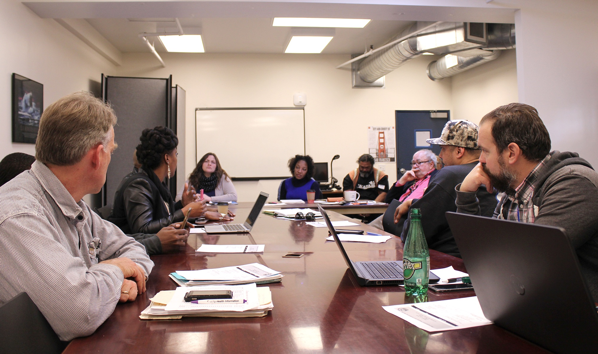

Young people in San Francisco’s most violent neighborhoods often have many barriers to finding and keeping long-term employment. These barriers include exposure to trauma, poverty, and others. With these barriers to long-term employment, it is more likely that youth will engage in illegal and violent activities.
Our office works with various city and community organizations to connect at-risk and in-risk transitional-aged youth with opportunities and services that enable them to find and keep long-term employment.
This work is part of Mayor Edwin M. Lee's innovative Interrupt, Predict, and Organize for a Safer San Francisco Initiative.
Definitions: At-Risk, In-Risk, Transitional-Aged Youth
The year-long IPO Employment Program helps young adults who reside in San Francisco neighborhoods with high levels of street violence. These neighborhoods include Bayview / Hunter's Point, Mission, Outer Mission, Western Addition, and Visitacion Valley. Participants are at-risk or in-risk individuals who have shown an interest in changing their lifestyle. Probation officers and SVIP outreach workers refer potential participants to the program.
The problems in a young person’s life that lead them to be involved in street violence rarely have a quick fix. The program helps participants make lasting, positive change in their lives not only by connecting them to employment opportunities, but also by providing counseling, coordination of services, support in pursuing educational credentials, and support with issues like housing, health, or child care.
Lonnell is a successful alumnus of the youth Employment Program.
Photo by Joshua Vining
Since Mayor Edwin M. Lee launched the program in 2012, the youth employment program has had two classes of participants each year. With each group of participants, the program partners and organizers learn how to adapt the program to more effectively meet individuals’ and communities’ needs.
The numbers for the program suggest it is working. In 2012 and 2013, 92% of participants stopped engaging in street violence and 76% exited with long-term employment. Moreover, former participants say that the program changed their lives in a lasting and positive way. Community members from the neighborhoods in which the program operates report that participants' success gives other young people in the neighborhood hope and a model to follow.
San Francisco Public Works, the Recreation and Parks Department, the San Francisco Municipal Transportation Agency, the San Francisco Public Library, and various private employers have partnered with the program to provide opportunities for participants to gain work experience. Partners’ experience with program participants has been overwhelmingly positive. Most partners have taken on program participants as full-time employees following the program.
Josh worked at San Francisco Public Works when he was a participant in the program, and now works at the San Francisco Public Library full-time.
Photo by Joshua Vining
To expand the program and make it more sustainable, the program is currently seeking to partner with more private employers. If your business or a business you know of may be interested in partnering with the program, please contact us.
The IPO Employment Program is a year-long program that helps at-risk and in-risk young adults from neighborhoods with high levels of street violence change their lifestyles.
All young adults who are considered for the program are individuals who have expressed an interest in changing their lifestyle. Probation officers or SVIP outreach workers refer individuals to the program.
When a participant enters the program, three things happen: they go through a job readiness training program, they are paired with a case manager, and they are matched with a host site where they will work during the program.
The program begins with a 4–6 week long job readiness training program. During this training, participants learn skills that help them succeed at their host sites. Former participant Josh says that, for him, job readiness training helped him overcome shyness when talking to employers. He says, “now I'm able to tell them what I'm good at…or what I need to brush up on and I'm able to tell them I'm a team player, I'm good at working with others…”
Yolanda is a Case Manager at Young Community Developers.
Photo by Joshua Vining
At the start of the program, participants are also assigned a case manager. Case managers act as coaches for program participants—they help participants overcome obstacles and stay committed to their goals throughout the program. Case managers also help connect participants with the right services to help them succeed. For example, a case manager might connect a participant to an organization to help them find stable housing.
Last, staff members from the San Francisco Human Services Agency interview participants to figure out what type of work experience could be a fit for the participant based on their skills and interests. Then the HSA, our office, and other partners assign participants to host sites. A host site an organization that has agreed to provide opportunities for the program participants to gain work experience. Participants become employees at the host site for during the 12 months of the program.
During a normal week in the program, a participant will spend most of the week at their host site. At the host site, the participant gets on-the-job training, learns soft skills, and gains work experience to add to their resume.
When a participant is not working at their host site, they go to classes and counseling. Participants attend academic classes at 5 Keys Charter School for 6 hours each week. Since many participants don’t have a high school degree, they use this time to earn a GED or high school diploma. Some participants also take specific classes or trainings related to the career they want to pursue after the program.
For two hours each week, participants attend group counseling. Counseling helps participants deal with issues like grief and loss, anger management and conflict resolution, stages of change, self esteem, and life skills.
Each week, the organizations and individuals who contribute to the program meet to discuss each participant’s progress. The partners make sure that they all understand a participant’s current progress and challenges so that they can work together to help the participant succeed.
When a participant has completed the program, their case manager and other program partners help them with their next step. In many cases, that is finding long term employment. For some, that is enrolling in college or a vocational program.